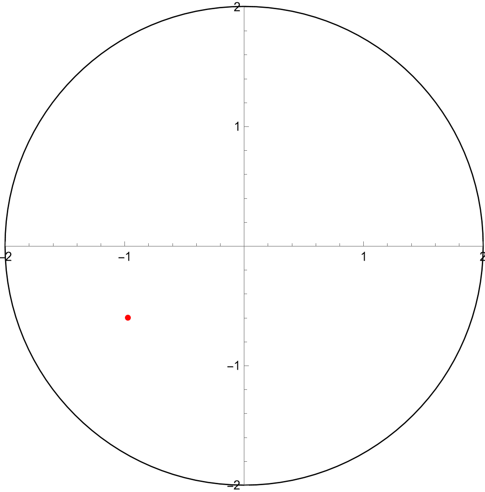
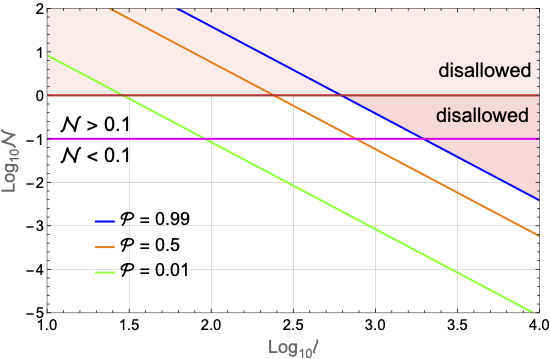
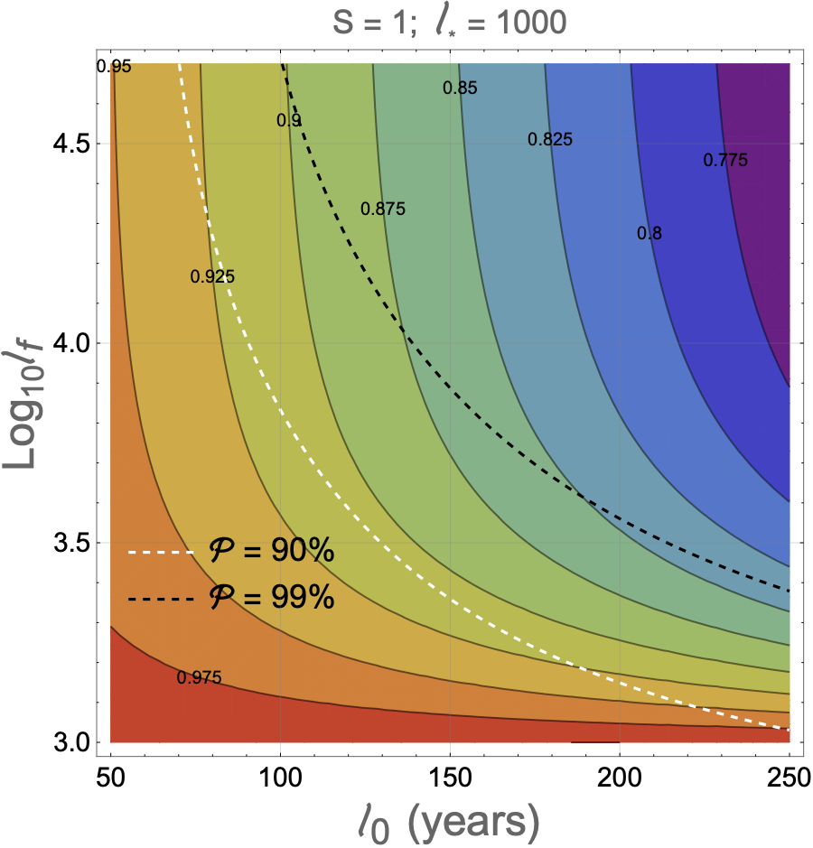

My Research
I build mathematical models to understand the universe. I have a number of different interests, including the very early universe and the Search for Extraterrestrial Intelligence (SETI). Below, I link to an article in Universe Today about my research on SETI. Below that, I describe my research in multiple drop-down boxes.
Media Articles About My Research
SETI and the Fermi Paradox for a General Audience
Introduction
I am very interested in the Fermi paradox, which is the apparent contradiction between the vast number of planets in our galaxy (i.e., the Milky Way (MW)) and the evident lack of intelligent life. For example,
we now know that at least half of the stars in MW have planets. Since there are at least around 100 billion stars in the MW, and planetary systems often have multiple planets, the MW must have at least
100 billion to perhaps 1 trillion planets.
Suppose that for every million planets in the MW, one can support life sufficient to allow the evolution of intelligent life. This might seem to imply that life is rare, but actually it predicts at least 1011/106 = 100,000 intelligent MW lifeforms. As Enrico Fermi famously asked in 1950, where is everyone?
I think this paradox is made even more acute by considering the vastness of time and not just of space. We now know [2] that the MW is at least 12 or 13 billion years old, estimating conservatively. We also know [3] that the first stars formed at around the same time. Our Solar System, however, is only 4.6 billion years old. This implies that there are billions of planetary systems that are billions of years older than our own. Even if just one civilisation evolved billions of years ago, and never developed technology better than 21st century human technology, this one civilisation could have colonised the entire MW in around 1.5 billion years. So why aren't there signs of this civilisation's exitence? If such a civilisation evolved, say, 10 billion years ago and has survived to this day, it in fact could have spread itself around the MW several times over. Thus, we are not just contending with the vast number of planets in the MW, but also the vast amount of time during which civilisations could have evolved and left signs of their existence.
The GIF to the right describes the basic conception of my model. Suppose that N alien civilisations randomly arise in the MW; each civilisation is a red dot, and the MW is the circle that has a radius R. Each civilisation emits radio signals over a period of time t. The larger N and t are, the greater the probability that at least one signal would have been observed by now by SETI; I show that this probability is
assuming that the probability P of observing each signal is identical and much smaller than one. Moreover, I show in my paper that, if P is much smaller than one, then P is about 0.6t/R. For example, this
implies that the number of civilisations N is about -5ln(0.01)/(3*t/R) = 7.7/δ, where δ = t/R and ℘ = 0.99. In words, this means that we can constrain the number of civilsations based upon the null SETI result;
in this case, we're finding a relationship between N and t/R if the likelihood of finding at least one signal is 99%.
We can go further and connect my model to the Drake equation, which is an equation which connects N to seven parameters that we can independently determine. The Drake equation is
where
Secondly, we have not accounted for realistic distributions of probabilities, but rather have assumed that the probability of observing each alien radio signal is the same. We will explain how to incorporate this complexity into the model in the next section.
[1] Civiletti, Matthew. 2025. “Quantifying the Fermi Paradox via Passive SETI: A General Framework.” The Open Journal of Astrophysics 8 (December)
[2] Schlaufman, Kevin C., Ian B. Thompson, and Andrew R. Casey. "An ultra metal-poor star near the hydrogen-burning limit." The Astrophysical Journal 867.2 (2018): 98.
[3] Ezzeddine, Rana, and Anna Frebel. "Revisiting the Iron Abundance in the Hyper Iron-poor Star HE 1327–2326 with UV COS/HST Data." The Astrophysical Journal 863.2 (2018): 168.
[4] Sheikh, Sofia Z., et al. "Earth Detecting Earth: At What Distance Could Earth’s Constellation of Technosignatures Be Detected with Present-day Technology?." The Astronomical Journal 169.2 (2025): 118.
Suppose that for every million planets in the MW, one can support life sufficient to allow the evolution of intelligent life. This might seem to imply that life is rare, but actually it predicts at least 1011/106 = 100,000 intelligent MW lifeforms. As Enrico Fermi famously asked in 1950, where is everyone?
I think this paradox is made even more acute by considering the vastness of time and not just of space. We now know [2] that the MW is at least 12 or 13 billion years old, estimating conservatively. We also know [3] that the first stars formed at around the same time. Our Solar System, however, is only 4.6 billion years old. This implies that there are billions of planetary systems that are billions of years older than our own. Even if just one civilisation evolved billions of years ago, and never developed technology better than 21st century human technology, this one civilisation could have colonised the entire MW in around 1.5 billion years. So why aren't there signs of this civilisation's exitence? If such a civilisation evolved, say, 10 billion years ago and has survived to this day, it in fact could have spread itself around the MW several times over. Thus, we are not just contending with the vast number of planets in the MW, but also the vast amount of time during which civilisations could have evolved and left signs of their existence.
My Geometrical SETI Model
To help solve this paradox, astronomers have been searching for alien radio signals for about 60 years. This is known as the Search for Extraterrestrial Intelligence (SETI), and, despite considerable efforts, no alien signals have been discovered. This makes one wonder how significant SETI has been; in other words, can we use this null result to help answer the Fermi paradox? My research [1] shows that the answer to this question is yes. By building a mathematical model to compute the probability of at least one SETI observation, we can connect the null SETI result to the underlying parameters.The GIF to the right describes the basic conception of my model. Suppose that N alien civilisations randomly arise in the MW; each civilisation is a red dot, and the MW is the circle that has a radius R. Each civilisation emits radio signals over a period of time t. The larger N and t are, the greater the probability that at least one signal would have been observed by now by SETI; I show that this probability is
℘ = 1 - e-PN,
We can go further and connect my model to the Drake equation, which is an equation which connects N to seven parameters that we can independently determine. The Drake equation is
N = r∗fp ne fl fifc l ≡ 𝒩l,
- r∗ is the number of stars forming per year in the MW;
- fp is the fraction of such stars with planets;
- ne is the number of habitable planets, per planetary system;
- fl is the fraction of habitable planets on which life evolves;
- fi is the fraction of life-bearing planets on which intelligent life evolves;
- fc is the fraction of intelligent lifeforms which emit EM radiation;
- l is the mean number of years during which intelligent lifeforms emit EM radiation.
Limitations of My Model
To be clear, the model I've described above contains many simplifications. For one, I have not accounted for the attenuation of EM signals or the limited sensitivity of human radio telescopes. For instance, human radio leakage would only be detectable up to about 4 light-years from Earth with human-like technology [4]. Since apparent brightness decreases proportional to 1/distance2, however, improving this to 400 ly requires an increase in sensitivity by a factor of 10,000. So far, we have not made any assumptions about the intensity of alien radio signals, although we have assumed that these signals are being emitted in all directions equally. The model, however, can easily incorporate these factors.Secondly, we have not accounted for realistic distributions of probabilities, but rather have assumed that the probability of observing each alien radio signal is the same. We will explain how to incorporate this complexity into the model in the next section.
[1] Civiletti, Matthew. 2025. “Quantifying the Fermi Paradox via Passive SETI: A General Framework.” The Open Journal of Astrophysics 8 (December)
[2] Schlaufman, Kevin C., Ian B. Thompson, and Andrew R. Casey. "An ultra metal-poor star near the hydrogen-burning limit." The Astrophysical Journal 867.2 (2018): 98.
[3] Ezzeddine, Rana, and Anna Frebel. "Revisiting the Iron Abundance in the Hyper Iron-poor Star HE 1327–2326 with UV COS/HST Data." The Astrophysical Journal 863.2 (2018): 168.
[4] Sheikh, Sofia Z., et al. "Earth Detecting Earth: At What Distance Could Earth’s Constellation of Technosignatures Be Detected with Present-day Technology?." The Astronomical Journal 169.2 (2025): 118.


Civilisation Lifetimes: a Natural Solution to the Fermi Paradox?
The above introduction instructs us as to how we can tackle the Fermi paradox via the null SETI result. It is then natural to ask what possible solutions to the Fermi paradox the model might support. We can answer this question by considering different civilisation lifetime distributions. In the Introduction, we took all lifetimes to be identical for simplicitly; for a more realistic treatment, however, we should assume that civilisations have different lifetimes. We will call k the rank of the civilisation, ordered by lifetime. So, for example, the longest-lived civilisation is k = 1, the second longest-lived is k = 2, etc. Then the question arises of how the lifetimes are distributed. In other words, we want to know the function l(k) that defines the distrubution as a function of k.
We don't know, obviously, what distribution actually exists amongst extant civilisations. We can nonetheless make some educated guesses. Species and genera lifetimes tend to be distributed exponentially (~ e-k) or via a power-law (~ 1/kS). The question of which distribution should natural arise is rather complex; but, we can study both and see if we can make qualitative conclusions that are independent of distrbution. As it happens, we can do exactly that.
The first figure on the right represents a plot of lf vs l0, where the former is the lowest lifetime and latter is the greatest lifetime, where S = 1. We obtain this plot by finding the total lifetime L, which is the sum of l(k) over all lifetimes. The total lifetime can then be connected to the SETI geometrical model [1] from my paper; in particular, the greater L is the greater ℘ is. This is because a civilisation's (communicative) lifetime is directly related to the probability that we can observe its signals, and therefore the total lifetime gives rise to the probability of at least one observation ℘ from all civilisations. Thus, we can place limits on L from the null SETI result.
We can use these limits on L to solve lf for a given l0. Therefore, we can iterate through values of l0 and produce lf as a function of l0. This is plotted via the dashed black (℘ = 0.99) and dashed white (℘ = 0.90) curves. Superposed on this result is a plot of the proportion of lifetimes that are less than l* = 1000 years. The contours of this plot are labelled with these proprtions. So, for example, the boundary of the red and orange regions, located at the bottom left on the plot, corresponds to the fraction 0.975. This means that, along this boundary, 97.5% of civilisations live 1000 years or less.
Qualitatively, the conclusion is that—at least given this distribution—about 90% or more of civilisations live 1000 years or less. Even when lf is well above 1000, notice that the proportion of civilisations that live 1000 years or less increases; in fact, one can show that, as lf approaches infinity, this proportion approaches 1. As lf decreases, the proportion decreases; but, by the time this proportion is about 90%, lf is already 1000 years.
This result applies when S is larger or smaller than 1, and in the exponential case. In fact, one can show that there is no l(k) distribution such that the proportion of civilisations 1000 years or younger is less than 90% and that lf is around 10,000 or larger. Thus, we can conclude that civilisations generally, or sometimes always, live about 1000 years or less so long as the SETI geometrical models holds. This latter qualification is important, since the geometrical model we presented in the Introduction is considerably simplified. Although this result is not dispositive, is does show that one can in principle place stringent limitations on civilisation lifetimes—and therefore provide a natural solution to the Fermi paradox—merely based upon the null SETI result.
I would also argue that this result is reasonable from another perspective. Suppose we argue that the Fermi paradox is explained by the extreme improbability of a planet allowing for the evolution of intelligent life. Let us call this probability Plife. The notion that a tiny Plife explains the Fermi paradox is often called the Rare Earth hypothesis. To explain the lack of intelligent life, however, one must propose that human evolution is rather rare indeed. If there are conservatively around 1011 planets in the MW, then we expect 10 intelligent lifeforms if even Plife = 10-10. Further, this doesn't explain why evidently none of these civilisations left obvious signs of their existence. Given that billions of planets in the MW are billions of years older than Earth, even a one-in-ten-billion probability that a planet has given rise to intelligent life doesn't present a convincing case, in my view. An effective maximum lifetime, however, provides a solution to the Fermi paradox without the need to extremely fine-tune any parameters.
